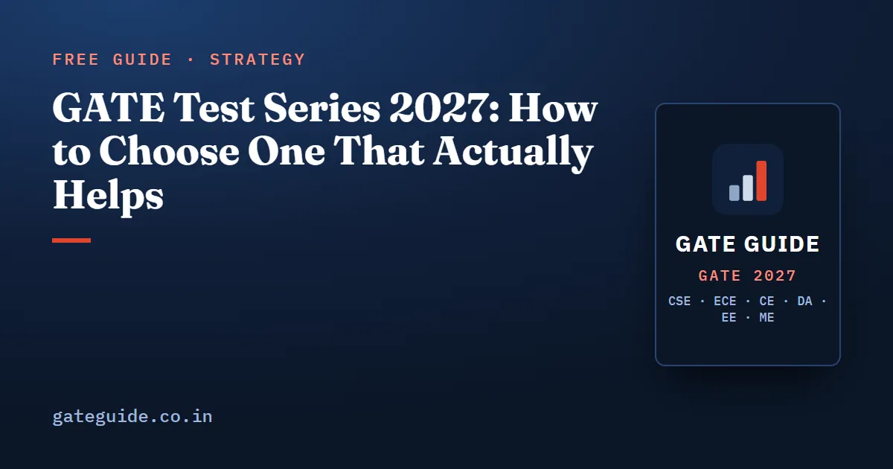

GATE Test Series 2027: How to Choose One That Actually Helps

How do you choose a GATE test series for 2027? Pick one whose questions are new and written on your paper's 2027 syllabus, whose screen behaves like the real computer-based test, and whose every test ends with an honest analysis and full worked solutions. This guide gives you five checks to run before you pay, shows what the analysis should teach you, and explains how many tests to take and when.
In this guide
Key takeaways
- A test series is only as useful as the review it makes possible. A score with no analysis or solutions teaches you very little.
- Check five things before paying: the 2027 syllabus, new questions, the official pattern, a realistic exam screen and full solutions with analysis.
- Use the free options first: the official mock test, your own paper's previous year papers and any free demo.
- Start full-length tests after you have covered every subject once, and review each test for at least as long as it took.
- Two full tests a week is a sensible ceiling, because each one needs a proper review.
- The analysis should show where your negative marks came from, since blind guessing on an MCQ gains nothing on average.
What a test series is, in plain words
Start with the terms. A full-length mock test is a complete practice paper in the official pattern: for GATE, 65 questions and 100 marks in three hours, with 15 marks of General Aptitude. A sectional test covers one subject or one part of the syllabus. A test series is a set of full-length mocks, sometimes with sectional tests, sold or offered together for one paper.
GATE is a computer-based test (CBT): you read each question on a screen and answer with the mouse. A numerical answer is typed on an on-screen keypad, and the only calculator allowed is the virtual calculator on the screen. A good test series rehearses that whole experience, not just the questions.
The five checks a good test series passes
Run these checks on any series you are considering. The last column says how to verify each one before you pay.
| Check | Why it matters | How to verify |
|---|---|---|
| Your paper's 2027 syllabus | A test on deleted topics wastes your hours | Compare its topic list with the official 2027 syllabus PDF |
| New questions | Reprinted past questions measure memory, not skill | Ask whether questions are written new; you will solve the past papers anyway |
| The official pattern | You must practise the real time and mark budget | 65 questions, 100 marks, 180 minutes; MCQ, MSQ and NAT with the official marking |
| A realistic exam screen | The palette, the keypad and the calculator cost time if they are unfamiliar | Try a free demo on the same screen |
| Analysis and full solutions | Review is where the marks are gained | See a demo result page before buying |
The screen deserves a closer look. In the real exam you move between questions with the question palette, mark questions for review, and type NAT answers on a keypad. The guide to the GATE exam interface and question palette explains every button, and the virtual calculator guide shows how to use the calculator without losing time.
Remember: a test series is a review tool. If you cannot see why you lost each mark, the score alone has not taught you anything.
How the analysis should change your guessing
The marking rules shape what a good analysis shows you. A wrong MCQ costs one-third of a mark for a one-mark question and two-thirds for a two-mark question. MSQ and NAT carry no negative marks. These rules are common to every GATE paper; confirm them in the current information brochure.
Now see what a blind guess is worth. The expected value of a guess is the gain if it is right, weighted by its probability, minus the loss if it is wrong, weighted by its own probability.
Worked example: guessing on a one-mark MCQ
With four options and no idea which is right, each is correct with probability :
A blind guess gains nothing on average. Now suppose you can rule out one option with certainty. Three options remain:
The guess is now worth one-ninth of a mark on average. Rule out two options and it rises to of a mark.
This is where the analysis earns its place. If it shows your wrong MCQs and how many negative marks they cost, you can see whether your guesses are informed or blind. Over three or four tests, that tells you when to attempt and when to leave a question.
Trap: an unanswered MSQ or NAT scores nothing, but attempting it costs nothing either. Leaving one blank is a lost chance, not a safe choice.
How many tests, and when to start
Full-length tests come after the learning, not instead of it. Take them once you have covered every subject at least once and done topic or sectional tests on each. Before that, a full mock mostly measures syllabus you have not studied yet.
GATE 2027 runs from 6 to 21 February 2027, so your paper could be in any of three weeks. Each full test costs three hours to sit and at least as long to review. That makes two full tests a week a sensible ceiling; a third eats the hours you need to fix what the first two showed. The GATE 2027 mock test schedule gives a dated, week-by-week plan from October to the exam.
A series of 10 full tests, plus your own paper's previous year papers sat as timed tests, gives you a solid base. What matters more than the number is that every test is reviewed before the next one. The guide to reviewing a mock test shows how to sort every wrong answer by its cause.
Use the free options first
Three free sources come before any paid series:
- The official mock test. The organising institute publishes one per paper on the GATE website. On 10 October 2026 the GATE 2027 site at gate2027.iitm.ac.in showed no mock link yet. The official mock test guide explains where it appears and what it can and cannot tell you.
- Your paper's previous year papers. They are free on the official download page, with answer keys. Sit some of them as timed full papers.
- A free demo. Before paying for any series, take its demo to judge the screen, the calculator and the result page yourself.
Where the GATE Guide test series fits
GATE Guide runs its own test series, so here are its facts plainly. It costs ₹250 per branch, for CSE, ECE, EE, ME, CE and DA. Each branch has 10 full mock tests of 65 questions, 100 marks and 180 minutes, written new for the 2027 syllabus; no question is taken from a past GATE paper. They are different from the 10 PDF mock tests inside each GATE Guide book, so you can take both without meeting a question twice.
The tests run full screen in an interface laid out like the official one: section tabs, the question palette, an on-screen keypad for NAT answers and a virtual scientific calculator. When you submit, you get your score with negative marks, section-wise and subject-wise analysis, and worked solutions for every question. Access lasts until 31 March 2027.
You can judge it before paying. The free demo test has 20 sample questions and a 20-minute timer, with no sign-up. The test series page has the branch list and the details.
Quick revision
- Choose a series by five checks: 2027 syllabus, new questions, official pattern, real exam screen, analysis with full solutions.
- A GATE paper is 65 questions, 100 marks, three hours, with 15 marks of General Aptitude.
- Wrong MCQs cost one-third or two-thirds of a mark; MSQ and NAT have no negative marks.
- A blind one-mark MCQ guess is worth zero on average; ruling out one option makes it worth one-ninth of a mark.
- Start full tests after covering every subject once; at most two a week.
- Review each test for at least as long as it took.
- Use the free official mock, previous year papers and a demo before paying.
Frequently asked questions
Which is the best GATE test series for 2027?
The best one is the one that passes five checks for your own paper. Its questions are new and written on the 2027 syllabus, its tests follow the official pattern, its screen behaves like the real computer-based test with a virtual calculator, and every test ends with an analysis and full worked solutions. Try a free demo before paying to check the last three yourself.
Is there a free GATE mock test?
Yes. The organising institute publishes a free official mock test for every paper on the GATE website, though on 10 October 2026 the GATE 2027 site showed no mock link yet. The official previous year papers and answer keys are also free. GATE Guide offers a free 20-question demo test in its exam interface, with no sign-up needed.
When should I start a GATE test series?
Start full-length tests once you have studied every subject at least once and taken topic or sectional tests on each. For GATE 2027, which runs from 6 to 21 February 2027, a plan that starts full mocks around the end of November leaves time to review each one properly before the exam.
How many mock tests are enough for GATE?
Enough to sit each one under exam conditions and review it fully before the next. A review takes at least as long as the test, so two full mocks a week is a sensible ceiling. Ten full tests plus your branch's previous year papers sat as timed tests make a solid base for most candidates.
How much does the GATE Guide test series cost?
It costs ₹250 per branch, for CSE, ECE, EE, ME, CE or DA. Each branch has 10 full mock tests of 65 questions, 100 marks and 180 minutes, with instant analysis and worked solutions. Access lasts until 31 March 2027, and you can take a free demo test before you buy.
Sources
- GATE 2027 official website (IIT Madras)
- GATE 2027 Information Brochure (official PDF)
- GATE 2027 downloads, previous question papers and answer keys (official)
- GATE Guide test series (10 mock tests per branch)
Dates, fees and the syllabus are set by the GATE 2027 organising institute and can change. Always confirm at gate2027.iitm.ac.in.